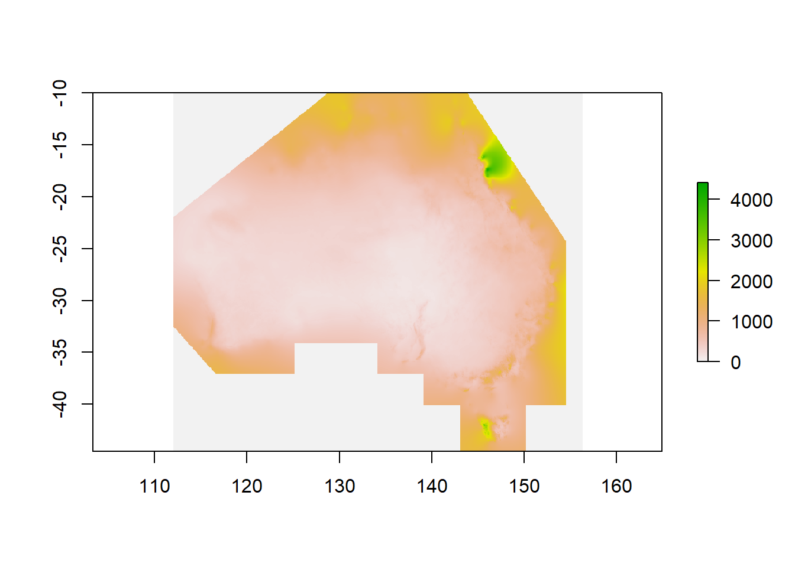
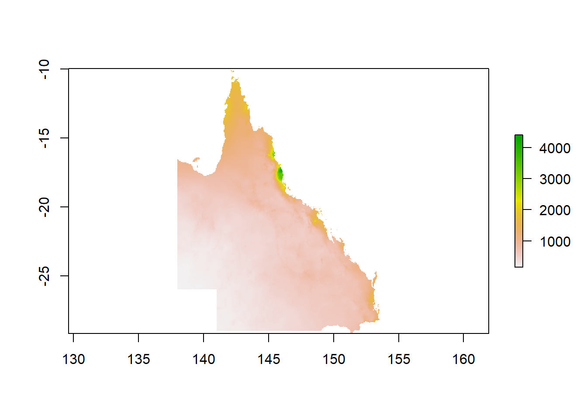

Chapter 4 Working with raster data in R
Raster data (sometimes referred to as gridded data) is a type of spatial data that is stored in a grid rather than a polygon. Imagine a chessboard of individuals squares covering the Australian landmass compared to 8 different shapes covering each state and territory. The nice thing about gridded data is that all the cells in the grid are the same size - making calculations much easier.
4.1 Getting started
First up we need to load some spatial and data crunching packages.
#Load packages
library(ncdf4)
library(raster)
library(rgdal)
library(ggplot2)
library(sp)
library(rgdal)
library(absmapsdata)
library(dplyr)
library(rasterVis)
library(RColorBrewer)
library(ggplot2)
library(viridis)
library(sf)
library(plyr)
library(vctrs)
library(tidyr)
library(tmap)
library(ggmap)
library(dplyr)
library(ggspatial)
library(rlang)
library(broom)
library(tidyverse)4.2 Import data
Next, we want to import annual rainfall data from github (original source available from the Bureau of Meterology)
rainfall <- raster("https://raw.github.com/charlescoverdale/ERF/master/rainan.txt")
plot(rainfall)
Straight away we see this is for the whole of Australia (and then some). We’re only interested in what’s going on in QLD… so let’s crop the data down to scale. For this we’ll need to import a shapefile for QLD.
The easiest way to do this is using the absmapsdata package - importing a shapefile of Australia then filtering for only Queensland.
# Import a polygon for the state of Queensland
QLD_shape <- state2016 %>%
filter(state_name_2016=="Queensland")4.3 Data Wrangling
We have raster data for the entirety of Australia (and then some as it’s pulled from one of the BOMs satellites). This is a bit messy to work with - so let’s crop the rainfall data from the entire Australian continent to just Queensland.
#Crop data
r2 <- crop(rainfall,extent(QLD_shape))
r3 <- mask(r2,QLD_shape)
plot(r3)
Great. That looks like it worked well. Next up, let’s transform the cropped raster (i.e. gridded data) into a data frame (df) that we can use in the ggplot package.
r3_df <- as.data.frame(r3,xy=TRUE)
r3_df <- r3_df %>%
filter(rainan!="NA")
ggplot() +
geom_tile(data=r3_df, aes(x=x, y=y, fill=rainan)) +
scale_fill_viridis() +
coord_equal() +
theme(legend.position="bottom") +
theme(legend.key.width=unit(1.2, "cm"))+
labs(title="Rainfall in QLD",
subtitle = "Analysis from the Bureau of Meterology",
caption = "Data: BOM 2021",
x="",
y="",
fill="(mm)") +
theme_minimal() +
theme(axis.ticks.x = element_blank(),axis.text.x = element_blank())+
theme(axis.ticks.y = element_blank(),axis.text.y = element_blank())+
theme(panel.grid.major = element_blank(), panel.grid.minor = element_blank())+
#theme(legend.position = "bottom")+
theme(plot.title=element_text(face="bold",size=12))+
theme(plot.subtitle=element_text(size=11))+
theme(plot.caption=element_text(size=8))
Excellent, we’ve got a working map of rainfall in Queensland using the ggplot package. We’ll tidy up the map also and add a title and some better colours.
4.4 Working with raster data
For our first piece of data analysis, we’re going to look at areas with less than 600mm of annual rainfall. How many of our data points will have less than 600mm of rain? Let’s take a look at the data distribution and find out.
ggplot(r3_df) +
geom_histogram(aes(rainan),binwidth=1,col="darkblue")+
labs(title="Distribution of annual rainfall in QLD",
subtitle = "Data using a 5x5km grid",
caption = "Data: Bureau of Meterology 2021",
x="Rainfall (mm)",
y="",
fill="(mm)") +
theme_minimal() +
theme(panel.grid.major = element_blank(), panel.grid.minor = element_blank())+
theme(legend.position = "none")+
theme(plot.title=element_text(face="bold",size=12))+
theme(plot.subtitle=element_text(size=11))+
theme(plot.caption=element_text(size=8))Interesting. The data is heavily right tailed skewed (the mean will be much higher than the median)… and most of the data looks to be between 0-1000mm (this makes sense).
Let’s create a ‘flag’ column of 0’s and 1’s that shows when a data point is less than 600mm.
r3_df <- r3_df %>%
mutate(flag_600mm = ifelse(rainan<=600,1,0))
flagcolours<-(c("grey", "#2FB300"))
ggplot() +
geom_tile(data=r3_df, aes(x=x, y=y, fill=as.factor(flag_600mm))) +
scale_fill_manual(values=flagcolours)+
coord_equal() +
theme(legend.position="bottom") +
theme(legend.key.width=unit(1.2, "cm"))+
labs(title="Areas with less than 600mm of annual rainfall in QLD",
subtitle = "Identifying suitable land parcels for ERF plantings",
caption = "Data: Bureau of Meterology 2021",
x="",
y="",
fill="(mm)") +
theme_minimal() +
theme(axis.ticks.x = element_blank(),axis.text.x = element_blank())+
theme(axis.ticks.y = element_blank(),axis.text.y = element_blank())+
theme(panel.grid.major = element_blank(), panel.grid.minor = element_blank())+
theme(legend.position = "none")+
theme(plot.title=element_text(face="bold",size=12))+
theme(plot.subtitle=element_text(size=11))+
theme(plot.caption=element_text(size=8))#ggsave("C:/06 R_code/ERF_600_mm_rainfall.png",units="cm",dpi=200, device="png")4.5 Making an interactive map
The static map above is good… but an interactive visual (ideally with place names below) is better.
To to this we’ll need to convert our data frame back to a raster layer, then plot it using the tmap package.
# r4_df <- subset(r3_df,select= -c(rainan))
#
# coordinates(r4_df) <- ~ x + y
# gridded(r4_df) <- TRUE
# r5 <- raster(r4_df)
#
# tmap_mode("view")
# tm_shape(r5)+
# tm_raster(style="cont",alpha=0.5)